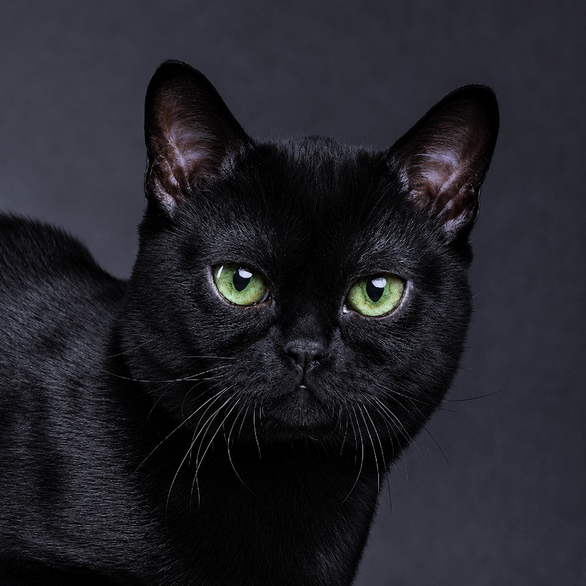

Gato Bombaim
Elegante, misterioso por fora e puro dengo por dentro. O Bombaim é famoso por sua pelagem preta incrivelmente brilhante e olhos magnéticos, combinando o visual de uma pantera selvagem com o coração doce de um gatinho de colo.

🏷️ Origem do Nome
O nome da raça é uma homenagem direta à cidade de Bombaim (atual Mumbai), na Índia. O objetivo da criadora era desenvolver um felino doméstico que lembrasse perfeitamente a icônica e majestosa pantera negra indiana, embora a raça não tenha nenhuma ligação genética direta com o país asiático.
📜 História
A raça foi criada em Kentucky, nos Estados Unidos, durante a década de 1950 por uma criadora chamada Nikki Horner. Seu sonho era criar uma "pantera de bolso". Para conseguir isso, ela cruzou seletivamente gatos da raça Burmês Americano com gatos de raça American Shorthair (Pelo Curto Americano) de cor estritamente preta, alcançando o padrão brilhante e escultural atual.
✨ Temperamento
Apesar do visual imponente, o Bombaim é conhecido como o "gato-chiclete". Eles são extremamente afetuosos, carentes e apegados aos seus humanos. Adoram seguir os donos pela casa, são muito sociáveis com visitas e outros animais, e possuem um miado suave, preferindo se comunicar através de ronrons profundos.
🌱 Cuidados
O Bombaim é um gato de manutenção relativamente simples, mas que exige atenção ao seu bem-estar emocional:
- Escovação semanal para remover pelos mortos e manter o brilho acetinado.
- Atenção rigorosa ao peso, pois possuem forte tendência à obesidade.
- Muito tempo de qualidade e brincadeiras, pois detestam a solidão prolongada.
- Consultas veterinárias regulares para acompanhar a saúde ocular e cardíaca.
💡 Curiosidades Apaixonantes
- Preto da raiz às pontas: Diferente de outros gatos pretos, a pelagem do Bombaim é totalmente escura, incluindo as almofadinhas das patas (os "feijãozinhos") e o focinho.
- Textura de Cetim: O pelo do Bombaim é tão curto, denso e colado ao corpo que o toque se assemelha muito ao cetim ou à seda pura.
- Buscadores de Calor: Eles são fissurados por calor. Não se surpreenda se encontrá-lo constantemente debaixo das cobertas ou esticado no menor raio de sol do chão.
- Inteligência de Cão: Podem ser facilmente treinados para andar de coleira e adoram brincar de buscar bolinhas ou brinquedos arremessados.